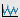
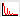
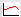

Orthogonal cross sections and time courses can be visualized using the program 'vlview'. 'vlview' only accepts one anatomical data set and additionally one map (zmap, tmap, Fmap, or contrast image). Use the program 'vlv' to visualize more than one data sets.
The anatomical data and the map can be called in the following form:
vlview -in norm_brain.v -zmap cgtbsGV1T.v
If a sulcus line representation is available, it can be specified using the command line option '-graph'. The map can also be visualized in the sulcus line representation. Example:
vlview -in cgtbsGV1T.v -graph GV1Tsulci.v
If a raw data file is specified, then the 'raw data button' appears as an icon  in the menu of the main window. If you press this button, a raw data window opens where you can switch between the timecourse and the power spectrum  of the selected voxel.
vlview -in cgtbsGV1T.v -raw tbsGV1T.v
If a text design file is additionally specified (i.e. the input of 'vgendesign'), the design can be visualized in the raw data window. Furthermore, a trial average button  appears, and trial averages can be computed for each condition. In our example, we selected only one condition. If the design contains more than one condition, you can select one or more conditions in the menu of the raw data window.
vlview -in cgtbsGV1T.v -raw tbsGV1T.v -des GV1T.des
This figure shows the raw data window containing (a) the fMRI timecourse, (b) the trial average for one condition plus standard error, and (c) the power spectrum for the timecourse. You can switch between these three cases using the appropriate icons in the top of the raw data window (see figure). For the trial average, the length of the trial and the temporal resolution can be specified in the preferences of vlview.
The timecourse, the trial averages for each condition, and the power spectrum of the timecourse is visualized for the raw fMRI data that are specified with the command line option '-raw'. Note that these can also be computed and visualized for the model function, i.e., for the fitted response. If a so-called beta-file (output of 'vcolorglm') is specified, then the fitted response, trial averages of the fitted response, and the power spectrum of the fitted response can be visialized.
vlview -in cgtbsGV1T.v -raw tbsGV1T.v -des GV1T.des -beta gtbsGV1T.v
{kind=link}
{kind=link}
{kind=link}
{kind=link}
{kind=link}